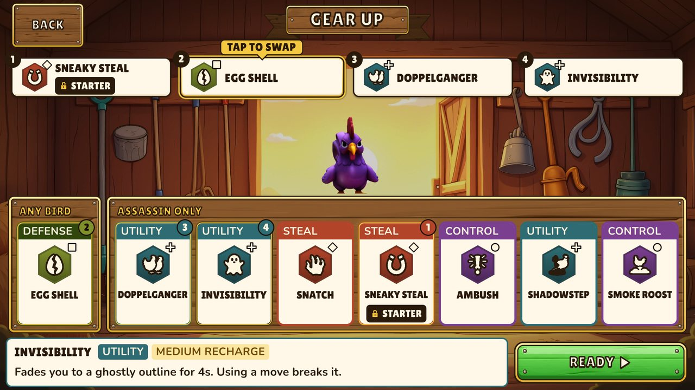

Tech
The stack, the rules that keep it replaceable, and how multiplayer authority works in Photon's Shared Mode.
Stack
| Layer | Choice |
|---|---|
| Engine | Unity 6 (6000.3 LTS), C# |
| Rendering | Universal Render Pipeline (URP), orthographic isometric camera |
| Architecture | MonoBehaviour. No ECS or DOTS. |
| Networking | Photon Fusion 2. Shared Mode now, Server Mode after funding. |
| Dependency injection | Zenject (Extenject) |
| Backend | Unity Gaming Services behind IUGSService, with a null implementation in the demo |
| Menu UI | UI Toolkit (UXML and USS) |
| Platforms | Windows (primary development target) and Android. iOS after the demo. |
Frame-rate targets in the design document are 60 fps on Windows and a stable 30 fps on mid-range Android. They are targets, not measurements.
Everything external sits behind an interface
Gameplay code never calls Fusion, UGS, Unity's input or the audio system directly. It talks to INetworkService, IUGSService, IAudioService, IInputProvider and ILogService. Zenject binds the implementations in a ProjectInstaller that lives on a prefab in Resources, so swapping one is a change to a single To<>() line and no other code.
The demo binds null implementations where a service is not needed: NullUGSService and NullAudioService are silent no-ops. Even the offline path goes through Fusion, in its single-player mode, so there is no separate local networking class and no fork between solo and multiplayer spawn logic.
Self-injection for networked objects
Two kinds of object skip Zenject's normal scene injection. The Bootstrap scene has no scene context, and Fusion's Runner.Spawn creates networked objects outside Zenject's lifecycle. Both inject themselves from the project context:
if (_log == null) ProjectContext.Instance.Container.Inject(this);The guard must not check ProjectContext.HasInstance. That property is false until something reads .Instance for the first time, and reading .Instance is what loads it.
ScriptableObject data and the Balance Oracle
Abilities are ScriptableObject assets derived from AbilityBaseSO. Class stats and match settings are ScriptableObjects too, in Assets/_Game/Data/, and every such type carries the SO suffix.
Class stats are not tuned by hand. Each is solved against a Solo Clear Time target, and the Balance Oracle checks it. The Oracle is a pure-C# simulator. It runs a greedy farming policy on the real pile coordinates, takes reach into account when it measures each leg of a trip, and asserts that every class lands within tolerance of its target from all four seats. It is covered by EditMode tests. The mechanics page explains the axiom and its tolerance bands.

How it is built
Cluck Wars is built solo with AI coding agents. Claude Code works through the 15 agents defined in .claude/agents: code-architect for planning and review, senior-dev for implementation, qa-reviewer and tester, and specialists for UI, UX, mechanics, level design, 2D and 3D art, VFX, shaders, the render pipeline, audio and narrative. A Unity MCP bridge (AI Game Developer) lets the agents inspect scenes, edit components, take screenshots and run the EditMode tests in the Editor. Larger multi-file changes can also go through Antigravity, using a skill called cravify.